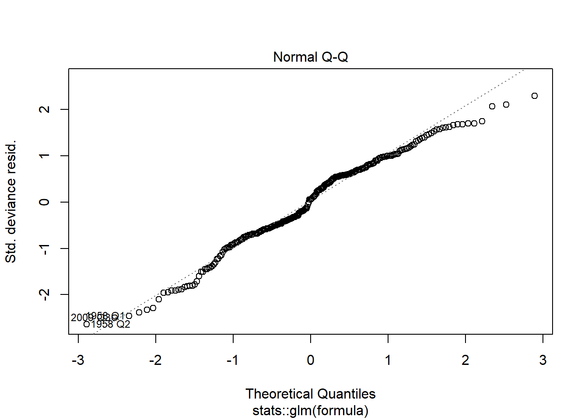
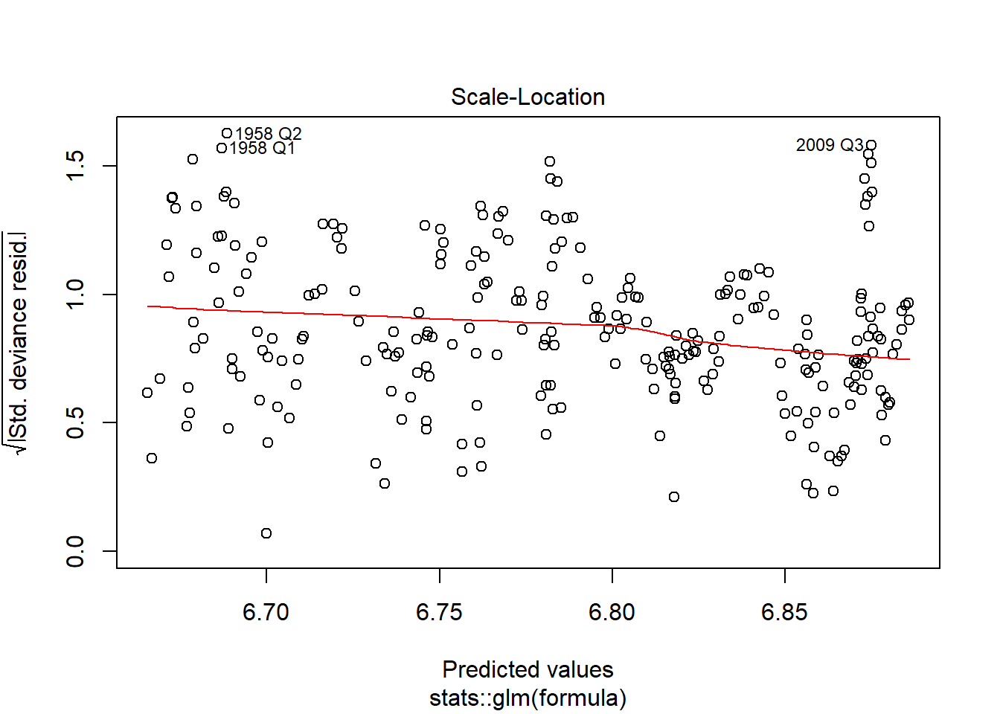
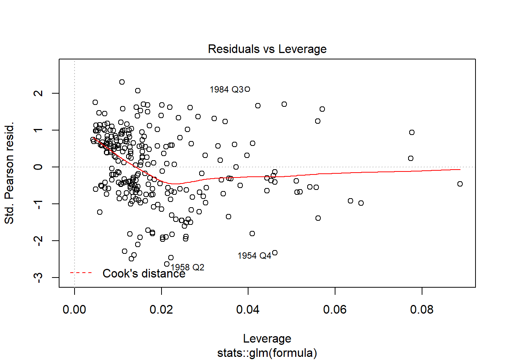
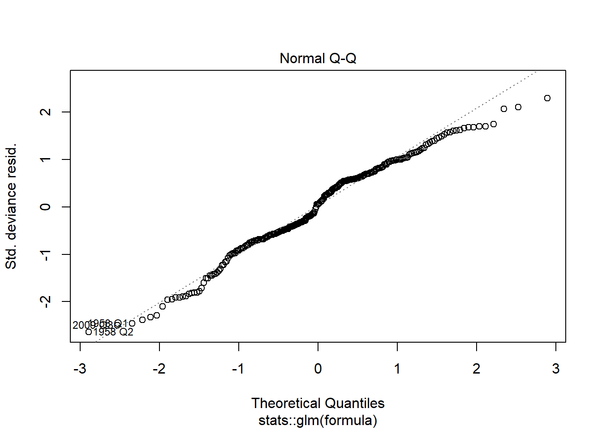
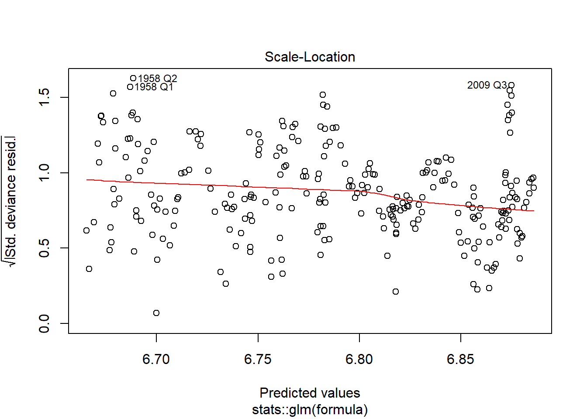
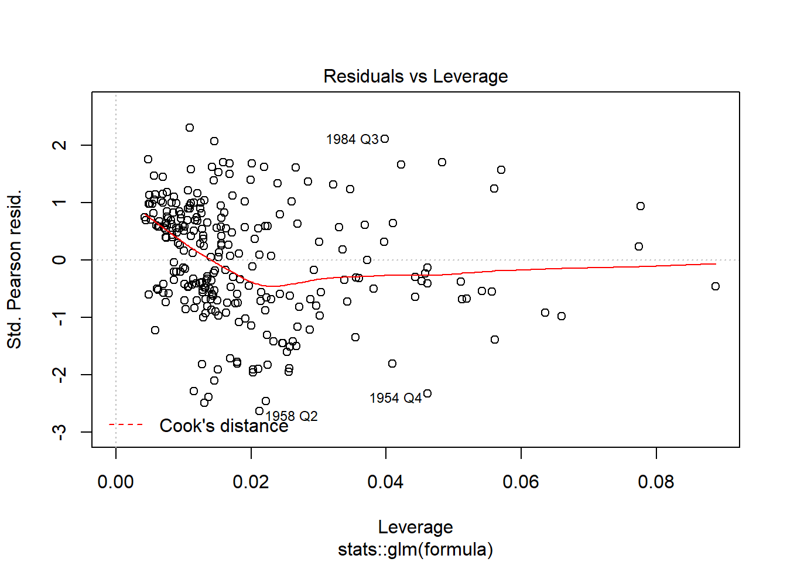
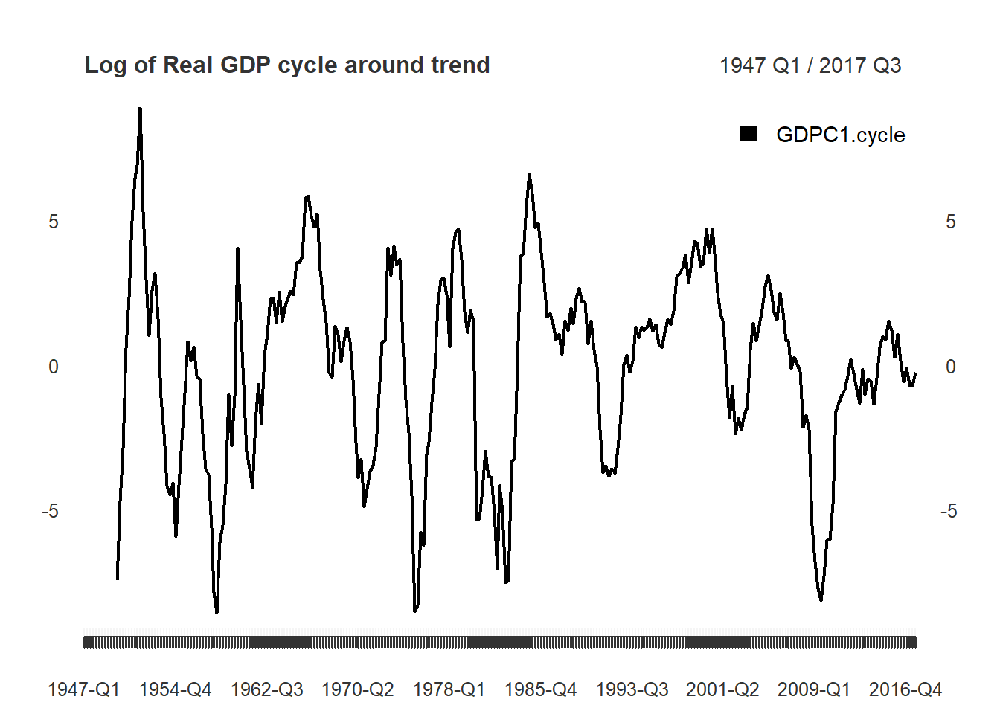
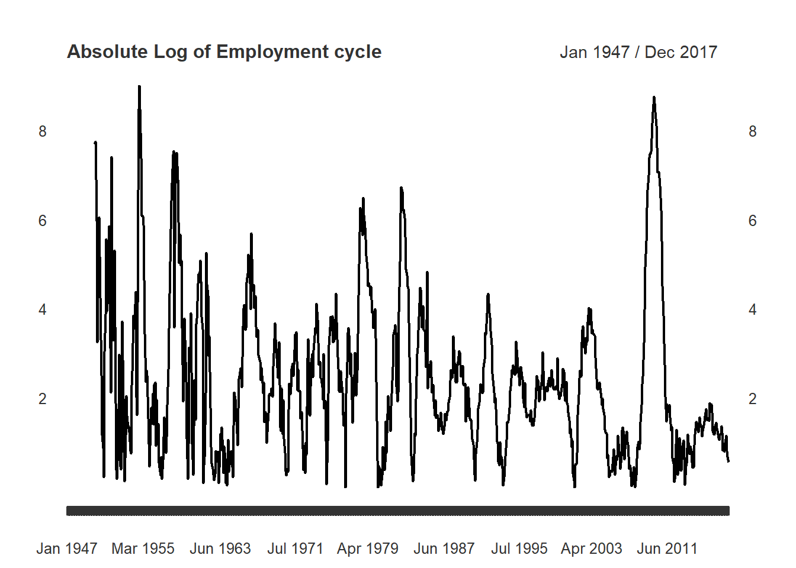

Additional examples
Justin M Shea
Introduction
In the working paper titled “Why You Should Never Use the Hodrick-Prescott Filter” doi:10.3386/w23429, James D. Hamilton proposes an approach to economic time series filtering which achieve goals the HP-Filter attempts to achieve, but ultimatly fails to deliver on. and none The neverhpfilter package implements his approach.
The abstract from Hamilton(2017) offers an excellent introduction.
Here’s why. (1) The HP filter produces series with spurious dynamic relations that have no basis in the underlying data-generating process. (2) Filtered values at the end of the sample are very different from those in the middle, and are also characterized by spurious dynamics.
(3) A statistical formalization of the problem typically produces values for the smoothing parameter vastly at odds with common practice, e.g., a value for \(\lambda\) far below 1600 for quarterly data.
(4) There’s a better alternative. A regression of the variable at date \(t + h\) on the four most recent values as of date \(t\) offers a robust approach to detrending that achieves all the objectives sought by users of the HP filter with none of its drawbacks.
A Better Alternative
Fortunatly, Hamilton doesn’t just add to the list of critiques plagueing the Hodrick-Prescott filter, he offers a solution as well. For quarterly economic data, it can be described as an AR(4) process, additionally lagged by \(h\) periods.
\[y_{t+h} = \beta_0 + \beta_1 y_t + \beta_2 y_{t-1} +\beta_3 y_{t-2} + \beta_4 y_{t-3} + v_{t+h}\] \[\hat{v}_{t+h} = y_{t+h} + \hat{\beta}_0 + \hat{\beta}_1 y_t + \hat{\beta}_2 y_{t-1} + \hat{\beta}_3 y_{t-2} + \hat{\beta}_4 y_{t-3}\]
Implementation in R
library(xts)
library(knitr)
library(broom)
library(neverhpfilter)data(GDPC1)
log_RGDP <- 100*log(GDPC1)
gdp_ar <- yth_glm(log_RGDP, h = 8, p = 4)
gdp_ar_df <- broom::tidy(gdp_ar)
kable(gdp_ar_df)| term | estimate | std.error | statistic | p.value |
|---|---|---|---|---|
| (Intercept) | 27.2025075 | 2.9638555 | 9.1780814 | 0.0000000 |
| Xt_0 | 1.1722639 | 0.2336541 | 5.0170908 | 0.0000010 |
| Xt_1 | -0.3432205 | 0.3858303 | -0.8895632 | 0.3745012 |
| Xt_2 | -0.1296324 | 0.3856853 | -0.3361092 | 0.7370525 |
| Xt_3 | 0.2769114 | 0.2320986 | 1.1930765 | 0.2338985 |
plot(gdp_ar) 

gdp_filtered <- yth_filter(log_RGDP, h = 8, p = 4)
kable(tail(gdp_filtered))| GDPC1 | GDPC1.trend | GDPC1.cycle | GDPC1.yt8-Xt_0 |
|---|---|---|---|
| 972.0977 | 971.9094 | 0.18831943 | 4.465194 |
| 972.7833 | 973.3109 | -0.52760922 | 3.880684 |
| 973.2190 | 973.2501 | -0.03104638 | 3.817619 |
| 973.5261 | 974.1597 | -0.63363121 | 3.327926 |
| 974.2795 | 974.9659 | -0.68630695 | 3.405300 |
| 975.0563 | 975.2427 | -0.18635065 | 3.777707 |
library(PerformanceAnalytics)##
## Attaching package: 'PerformanceAnalytics'## The following object is masked from 'package:graphics':
##
## legendqtr_recc <- to.quarterly(USREC["1947-1/2017-3"], OHLC=FALSE)
start <- index(qtr_recc[which(diff(qtr_recc$USREC)==1)])
end <- index(qtr_recc[which(diff(qtr_recc$USREC)==-1)])
Recessions <- paste(format(start,"%Y-%q"),format(end,"%Y-%q"),sep="/")
main <- "Log of Real GDP (GDPC1) and trend"
chart.TimeSeries(GDPC1, period.areas = Recessions, period.color="lightgrey", lwd=2)
qtr_recc <- to.quarterly(USREC["1947-1/2017-3"], OHLC=FALSE)
qtr_recc2 <- qtr_recc[qtr_recc$USREC==1,]
main <- "Log of Real GDP (GDPC1) and trend"
plot(gdp_filtered[,1:2], grid.col = "white", legend.loc = "topleft", main = main)
lines(gdp_filtered[,3], type="h", on=NA, panel.first = abline(v = .index(qtr_recc2), type="h", lwd = 2, col = "lightgrey"))

#plot(gdp_filtered[,1:2], grid.col = "white", legend.loc = "topleft", main = main)
#points(x=index(qtr_recc2), type="h", lwd = 2, on=1,col = "lightgrey")
#abline(v = .index(qtr_recc2), type="h", lwd = 2, col = "lightgrey")main <- "Log of Real GDP cycle and random walk"
plot(gdp_filtered[,3:4], subset = "1982/", grid.col = "white", legend.loc = "topright", main = main)
#lines(panel.first = abline(v = .index(qtr_recc2), type="h", lwd = 2, col = "lightgrey"))
#addSeries(x = .index(qtr_recc2), type="h", lwd = 2, col = "lightgrey")main <- "Log of Real GDP cycle around trend"
#Recessions <- as.yearqtr(index(USREC["1947/"]))
plot(gdp_filtered[,3], grid.col = "white", legend.loc = "topright", main = main)
#addEventLines(Recessions)
#abline(h = 0, lty = 2, lwd = 1, col = "red")# household
Employment_log <- 100*log(PAYEMS["1947/"])
employ_ar <- yth_glm(Employment_log, h = 24, p = 12)
employ_filtered <- yth_filter(Employment_log, h = 24, p = 12)
main <- "Log of Employment and trend"
plot(employ_filtered[,1:2], grid.col = "white", legend.loc = "topleft", main = main, panels = 'lines(employ_filtered[,3], type="h", on=NA)')
main <- "Absolute Log of Employment cycle"
plot(abs(employ_filtered[,3]), index(employ_filtered), col = "Black", grid.col = "white", main = main)